Steganographia, hoc est: Ars per occultam scripturam
Steganography: The Art of Hidden Writing
prdl-24395_steganographia-hoc-est-ars-per-occultam-scripturam · Style C / Cipher-key tables
The cipher tables of the Steganographia
The Steganographia is the work that made Trithemius famous and then notorious: three books that read, on the surface, as a manual for conjuring spirits, but are in fact a treatise on hidden writing. Each of its angel-princes — Pamersiel, Padiel, Camuel, Aseliel, Barmiel, Malgaras, Dorothiel, Cabariel, Raysiel, Symiel, Baruchas and the rest — governs a host of named sub-spirits, and it is in those sub-spirit tables that the cryptography lives. Each entry carries a wind or direction, a red (rubric) and a black letter, and a numeric value; together they are the key by which a concealed message is read out of the surrounding conjuration. (Book III turns to planetary and astrological value-tables in the same spirit.)
The tables below are recovered, table by table, from the page scans of the 1621 Frankfurt/Darmstadt printing and set beside the source facsimile, which is the authority — the print itself carries OCR-resistant damage, and where a cell is illegible it is left [unclear] rather than guessed. The conjuration cover-text that each table belongs to is translated in the side-by-side reader.
The cipher is decoded in a separate cryptanalysis. Eleven modi (II–XI and XXXII–XXXIX) decode — by inverting each modus's printed alphabet — into ordinary early-modern German, demonstrated on the cipher solutions page. This edition, by contrast, renders the Latin (and the German cover-text embedded in Books I–II) as it stands; the body text is not decoded inline. For the mechanism, see the companion Clavis works (prdl-70281, prdl-70282) and Jim Reeds, "Solved: The Ciphers in Book III of Trithemius's Steganographia" (1998).
Per-chunk renderings
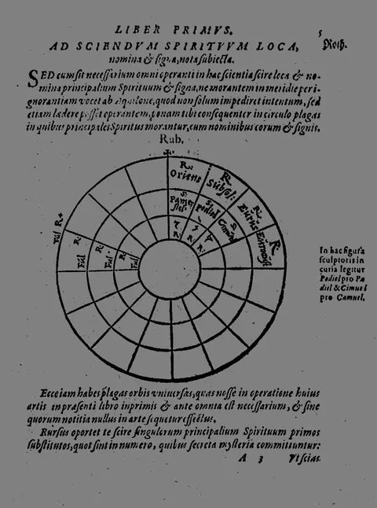
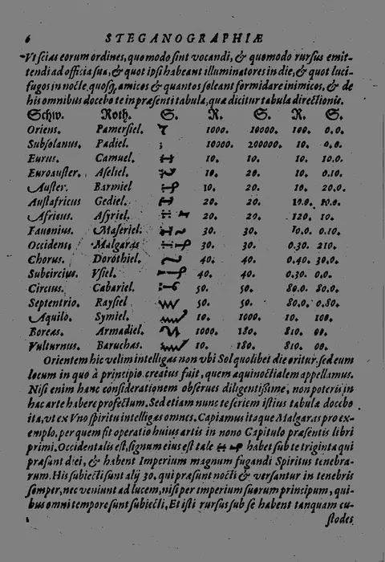
Steganographia — the master "Table of Direction": the sixteen principal spirits of the winds, their signs and alternating black/red numeric keys, Book I · cipher-key table full_chunk_0007
A spirit-name table — each principal spirit of a wind carries its sign-glyph (here [sign]) and a row of alternating black (Schwarz) and red (Roth) numeric values, the master key by which the hidden message is read out of the conjurations of the whole first book; OCR cells left [unclear] are damaged in the print. Read alongside the facsimile.
Headings: Schw[arz, black] / Roth[red], the alternating black-and-red numeric keys (S. R. S. R. S.); the Sign column holds each spirit's sign-glyph, here noted [sign]. Per the printed rubric, the engraver set "Podiel" for Padiel and "Cimuel" for Camuel.
| Wind | Spirit | Sign | (S.) | (R.) | (S.) | (R.) | (S.) |
|---|---|---|---|---|---|---|---|
| Oriens (East) | Pamersiel | [sign] | 1000 | 10000 | 100 | 0.0 | |
| Subsolanus | Padiel | [sign] | 10000 | 200000 | 10 | 0.0 | |
| Eurus | Camuel | [sign] | 10 | 10 | 10 | 10.0 | |
| Euroauster | Aseliel | [sign] | 10 | 20 | 10 | 0.10 | |
| Auster | Barniel | [sign] | 10 | 20 | 10 | 20.0 | |
| Austrafricus | Gediel | [sign] | 20 | 20 | 10.0 | 10.0 | |
| Africus | Asyriel | [sign] | 20 | 20 | 120 | 10 | |
| Fauonius | Maseriel | [sign] | 30 | 30 | 10.0 | 0.10 | |
| Occidens (West) | Malgaras | [sign] | 30 | 30 | 0.30 | 210 | |
| Chorus | Dorothiel | [sign] | 40 | 40 | 0.40 | 30.0 | |
| Subcircius | Vsiel | [sign] | 40 | 40 | 0.30 | 0.0 | |
| Circus | Cabariel | [sign] | 50 | 50 | 80.0 | 80.0 | |
| Septentrio (North) | Raysiel | [sign] | 50 | 50 | 80.0 | 0.80 | |
| Aquilo | Symiel | [sign] | 10 | 1000 | 10 | 100 | |
| Boreas | Armadiel | [sign] | 1000 | 180 | 810 | 01 | |
| Vulturnus | Baruchas | [sign] | 10 | 180 | 810 | 00 |
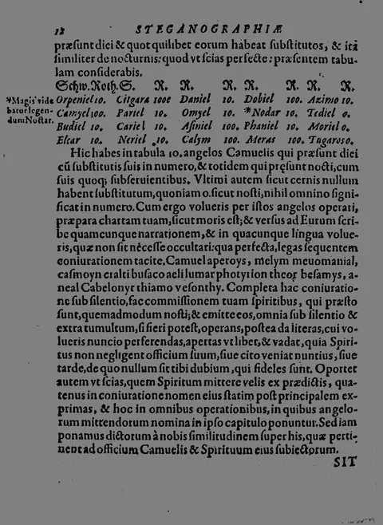
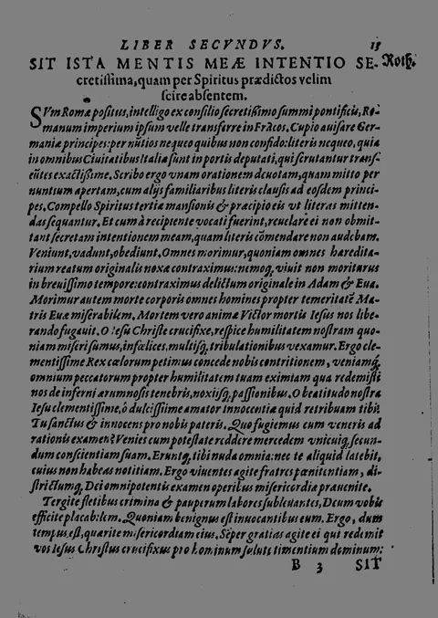
Steganographia — sub-spirits of the prince Camuel (ten by day, ten by night) and their cipher keys, Book I, ch. III · cipher-key table full_chunk_0010
A spirit-name table — each entry carries its red (rubric) and black letter and a numeric value (the count of its substitutes), the key by which the hidden message is read out of the conjuration of Camuel; the four spirits keyed 0 have no substitute, since 0 signifies nothing. A marginal note reads "It seemed rather to be read Nokar" for the spirit here printed Nodar. OCR cells left [unclear] are damaged in the print. Read alongside the facsimile.
| (Black / Red) | ||||
|---|---|---|---|---|
| Orpeniel 10 | Citgara 10 | Daniel 10 | Dobiel 10 | Azimo 10 |
| Carryel 10 | Pariel 10 | Omzel 10 | *Nodar 10 | Tediel 0 |
| Budiel 10 | Cariel 10 | Asiniel 10 | Phaniel 10 | Moriel 0 |
| Elcar 10 | Neriel 10 | Calym 10 | Meras 10 | Tugaros 0 |
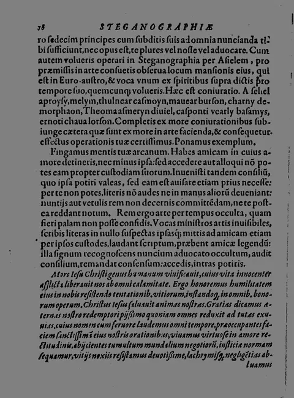
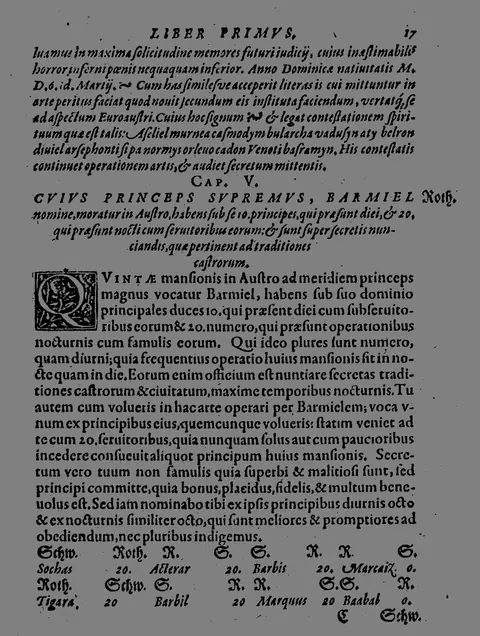
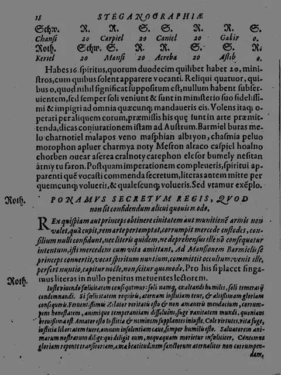
Steganographia — sub-spirits of the prince Aseliel (sixteen greater princes) and their cipher keys, Book I, ch. IV · cipher-key table full_chunk_0012
A spirit-name table — each of the sixteen greater princes under Aseliel carries its red (rubric) and black letter and a numeric value of 20 subject servants, the key by which the hidden message (here, matters of love) is read out of the conjuration; eight preside over the day and eight over the night. OCR cells left [unclear] are damaged in the print. Read alongside the facsimile.
| Mariel 20 | Cubiel 20 | Asphiel 20 | Melas 20 | (red names) |
| Charas 20 | Aniel 20 | Curiel 20 | Sariel 20 | (black names) |
| Parniel 20 | Asahel 20 | Chamos 20 | Othiel 20 | (black names) |
| Aratiel 20 | Arean 20 | Odiel 20 | Bufar 20 | (red names) |
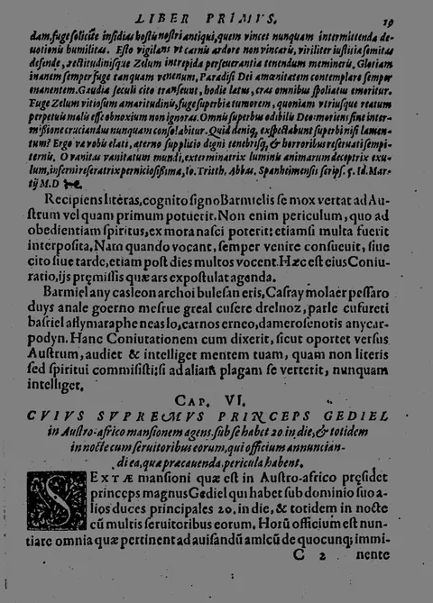
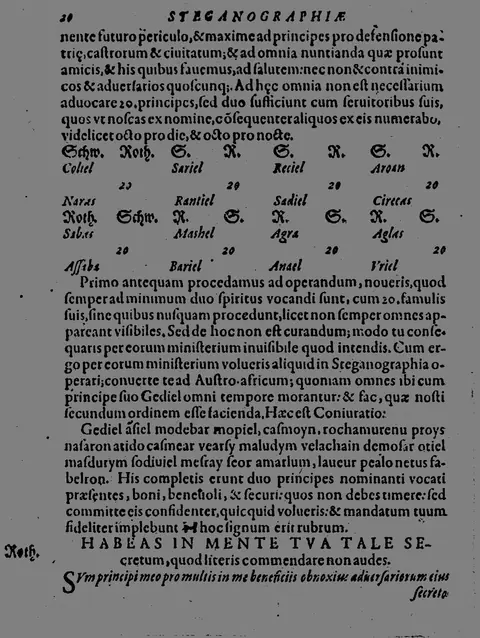
Steganographia — sub-spirits of the prince Barmiel (sixteen dukes) and their cipher keys, Book I, ch. V · cipher-key table full_chunk_0013
A spirit-name table — each of the sixteen dukes under Barmiel carries its red (rubric) and black letter and a numeric value of subject ministers, the key by which the hidden message (here, the surrenders of camps and cities) is read out of the conjuration; twelve have 20 ministers, while the four keyed 0 have none and always come alone. OCR cells left [unclear] are damaged in the print. Read alongside the facsimile.
| (Black / Red) | |||
|---|---|---|---|
| Sochas 20 | Aelerar 20 | Barbis 20 | Marcaiz 0 |
| Tigara 20 | Barbil 20 | Marquus 20 | Baabab 0 |
| Chansi 20 | Carpiel 20 | Caniel 20 | Gatir 0 |
| Keriel 20 | Mansi 20 | Acreba 20 | Aslib 0 |
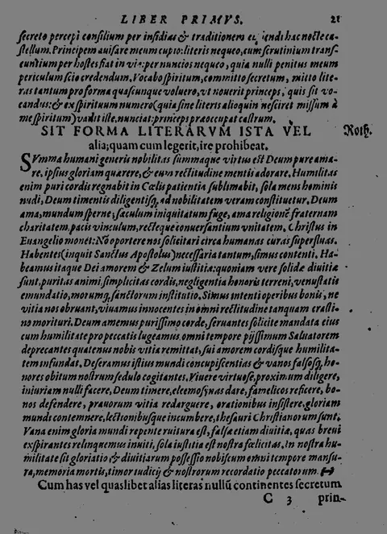
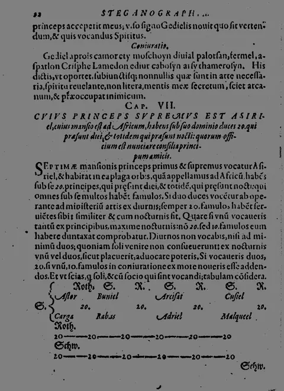
Steganographia — sub-spirits of the prince Gediel (sixteen dukes) and their cipher keys, Book I, ch. VI · cipher-key table full_chunk_0014
A spirit-name table — each of the sixteen dukes under Gediel carries its red (rubric) and black letter and a numeric value of 20 subject servants, the key by which the hidden message (here, the warning of friends against danger) is read out of the conjuration; eight preside over the day and eight over the night, and the prince's sign is given as red. OCR cells left [unclear] are damaged in the print. Read alongside the facsimile.
| (Black / Red) | |||
|---|---|---|---|
| Coliel 20 | Sariel 20 | Reciel 20 | Aroan 20 |
| Naras 20 | Rantiel 20 | Sadiel 20 | Cirecas 20 |
| Sabas 20 | Mashel 20 | Agra 20 | Aglas 20 |
| Assibs 20 | Bariel 20 | Anael 20 | Vriel 20 |
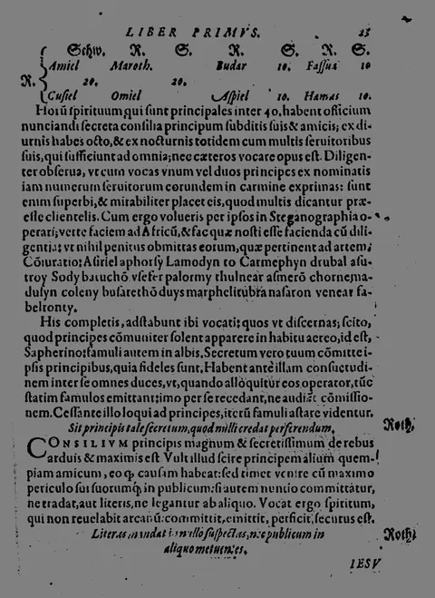
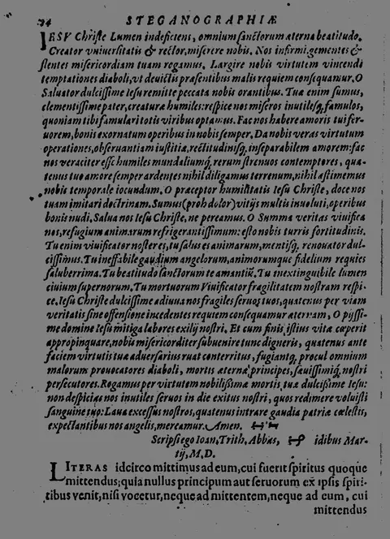
Steganographia — sub-spirits of the prince Asiriel, diurnal princes (table begins), Book I, ch. VII · cipher-key table full_chunk_0015
A spirit-name table — each duke under Asiriel carries its red (rubric) and black letter and a numeric value of subject servants, the key by which the hidden message (here, the counsels of princes announced to friends) is read out of the conjuration. This chunk holds the opening, diurnal portion of Asiriel's table; its nocturnal continuation falls in the next chunk. OCR cells left [unclear] are damaged in the print. Read alongside the facsimile.
| (Red / Black) | |||
|---|---|---|---|
| Astor 20 | Buniel 20 | Arcisat 20 | Cusiel 20 |
| Carga 20 | Rabas 20 | Adriel 20 | Malqueel 20 |
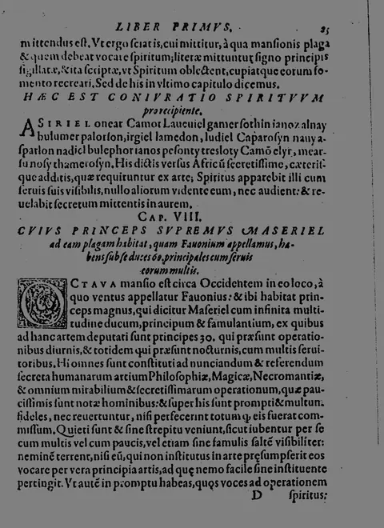
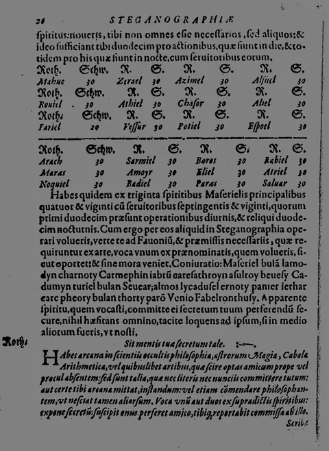
Steganographia — sub-spirits of the prince Asiriel, nocturnal princes (table continued), Book I, ch. VII · cipher-key table full_chunk_0016
A spirit-name table — each duke under Asiriel carries its red (rubric) and black letter and a numeric value of subject servants, the key by which the hidden message is read out of the conjuration. This chunk holds the nocturnal continuation of Asiriel's table (begun in the previous chunk): the first four spirits each have 20, the last four 10, as the prose explains; the printed numbers are partly garbled, so values are given as the chunk reads them. OCR cells left [unclear] are damaged in the print. Read alongside the facsimile.
| (Black / Red) | |||
|---|---|---|---|
| Amiel 20 | Maroth 20 | Budar 10 | Fassus 10 |
| Cusiel 20 | Omiel 20 | Aspiel 10 | Hamas 10 |
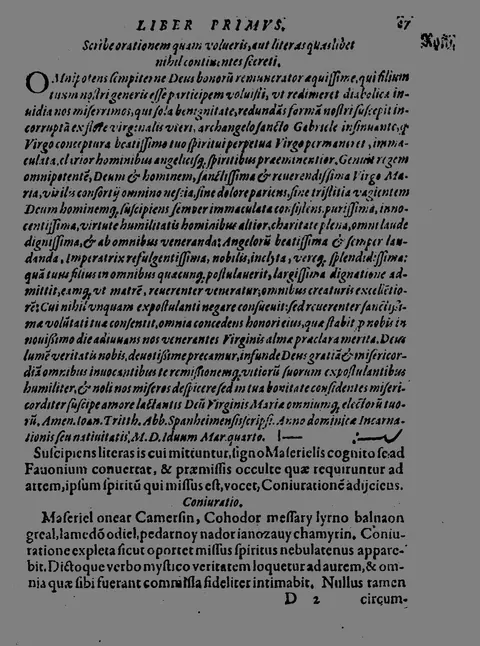
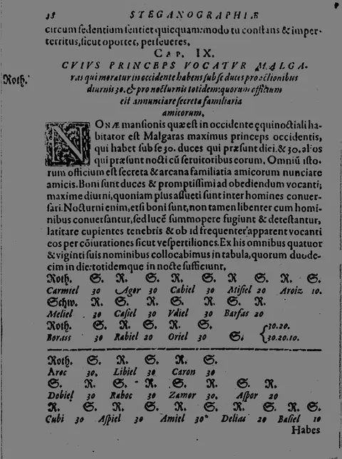
Steganographia — sub-spirits of the prince Maseriel (twenty-four dukes) and their cipher keys, Book I, ch. VIII · cipher-key table full_chunk_0017
A spirit-name table — each of the twenty-four dukes under Maseriel carries its red (rubric) and black letter and a numeric value of 30 subject servants (720 servants in all), the key by which the hidden message (here, the secrets of philosophy, magic, and necromancy) is read out of the conjuration; the first twelve preside over the day and the remaining twelve over the night. OCR cells left [unclear] are damaged in the print. Read alongside the facsimile.
| (Red / Black) | |||
|---|---|---|---|
| Mahue 30 | Zerael 30 | Azimel 30 | Alsuel 30 |
| Rouiel 30 | Athiel 30 | Chasor 30 | Aiel 30 |
| Faviel 30 | Vessur 30 | Potiel 30 | Espoel 30 |
| Arach 30 | Sarmiel 30 | Baros 30 | Rabiel 30 |
| Maras 30 | Amoyr 30 | Eliel 30 | Atriel 30 |
| Noquiel 30 | Badiel 30 | Paras 30 | Saluar 30 |
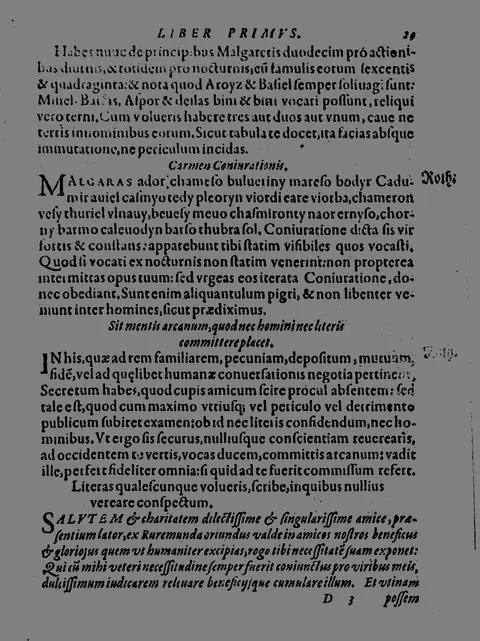
Steganographia — sub-spirits of the prince Malgaras and their cipher keys, Book I, ch. IX · cipher-key table full_chunk_0018
A spirit-name table — each entry carries its red (rubric) and black letter and a numeric value, the key by which the hidden message is read out of the conjuration; OCR cells left [unclear] are damaged in the print. Read alongside the facsimile.
| (Black / Red) | ||||
|---|---|---|---|---|
| Carmiel 30 | Ager 30 | Cabel 30 | Misiel 20 | Aroiz 10 |
| Meliel 30 | Casiel 30 | Vdiel 30 | Barfas 20 | |
| Borass 30 | Rabil 20 | Oriel 30 | [unclear: 30 / 20 / 10] |
(The Malgaras table continues into the following section; the trailing numeric cell is garbled in the print.)
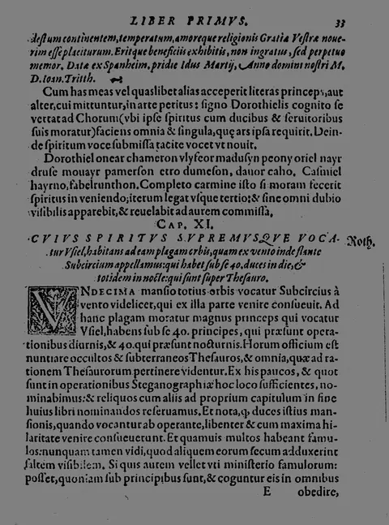
Steganographia — sub-spirits of the prince Dorothiel and their cipher keys, Book I, ch. X · cipher-key table full_chunk_0020
A spirit-name table — each entry carries its red (rubric) and black letter and a numeric value, the key by which the hidden message is read out of the conjuration; OCR cells left [unclear] are damaged in the print. Read alongside the facsimile.
Roth. — heading row (the four princes presiding over the hour)
| Mugael 0. | Choriel 0. | Artinc 0. | Efiel 0. |
The 24 dukes — diurnal (value 40) and nocturnal (value 400), in the two marker-orders P. S.R. and F. S.R.
| P. S.R. | F. S.R. | P. S.R. | F. S.R. |
|---|---|---|---|
| Mugael 40 | Gudiel 400 | Nachiel 40 | Phutiel 400 |
| Choriel 40 | Aspher 400 | Ofsiel 40 | Cayros 400 |
| Artinc 40 | Emuel 400 | Bulis 40 | Narfiel 400 |
| Efiel 40 | Souiel 400 | Moniel 40 | Moziel 400 |
| Maniel 40 | Cabron 400 | Pafiel 40 | Aroziel 400 |
| Suriel 40 | Diuiel 400 | Gariel 40 | Cusync 400 |
| Carsiel 40 | Abriel 400 | Soriel 40 | Vraniel 400 |
| Fubiel 40 | Danael 400 | Darbori 40 | Pelusar 400 |
| Carba 40 | Lomor 400 | Paniel 40 | Abael 400 |
| Merach 40 | Cesael 400 | Curfas 40 | Meroth 400 |
| Althor 40 | Buliel 400 | Aliel 40 | Cadriel 400 |
| Omael 40 | Larfes 400 | Maziel 40 | Lobiel 400 |
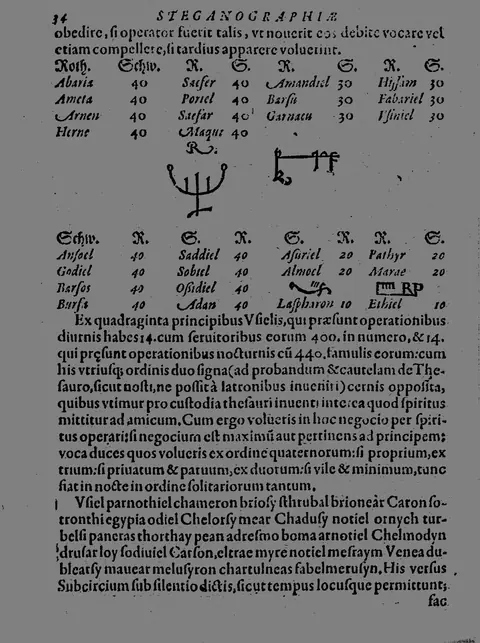
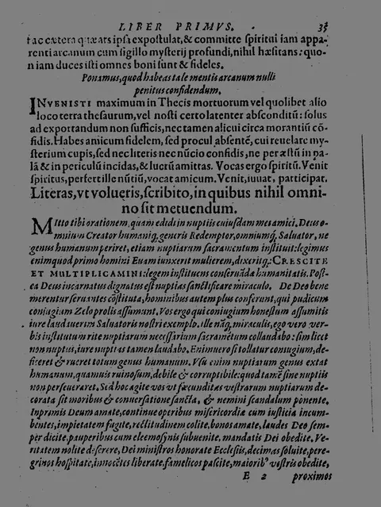
Steganographia — sub-spirits of the prince Vsiel and their cipher keys, Book I, ch. XI · cipher-key table full_chunk_0021
A spirit-name table — each entry carries its red (rubric) and black letter and a numeric value, the key by which the hidden message is read out of the conjuration; OCR cells left [unclear] are damaged in the print. Read alongside the facsimile.
Diurnal dukes (the fours and the thirties)
| Roth. Schw. R. | S. R. | S. R. | S. R. |
|---|---|---|---|
| Abaria 40 | Sacfer 40 | Amandiel 30 | Hijlam 30 |
| Amela 40 | Poniel 40 | Barsu 30 | Fabriel 30 |
| Arnen 40 | Saefar 40 | Garnacu 30 | Ifiniel 30 |
| Herne 40 | Alaque 40 |
Nocturnal dukes (the fours, the twenties, and the solitary tens)
| Schw. R. | S. R. | S. R. | R. S. |
|---|---|---|---|
| Anfoel 40 | Saddiel 40 | Asuriel 20 | Pathyr 20 |
| Godiel 40 | Sobiel 40 | Almoel 20 | Maraee 20 |
| Barsos 40 | Osidiel 40 | ||
| Burfa 40 | Adan 40 | Laspharon 10 | Ethiel 10 |
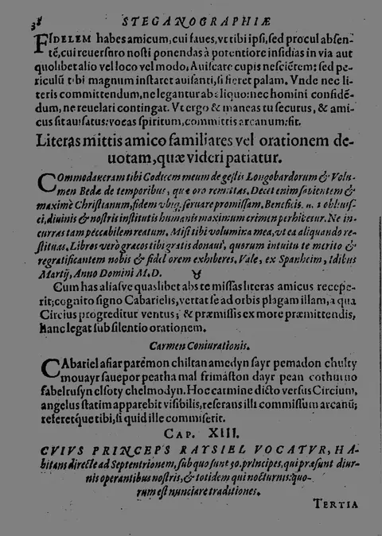
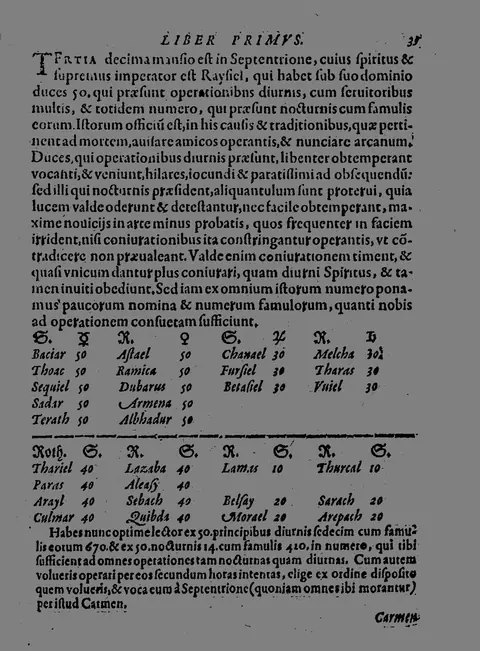
Steganographia — sub-spirits of the prince Cabariel and their cipher keys, Book I, ch. XII · cipher-key table full_chunk_0023
A spirit-name table — each entry carries its red (rubric) and black letter and a numeric value, the key by which the hidden message is read out of the conjuration; OCR cells left [unclear] are damaged in the print. Read alongside the facsimile.
| Schw. R. | S. R. | S. R. | S. R. |
|---|---|---|---|
| Satiefel 50 | Etymel 50 | Mador 50 | Ladiel 50 |
| Parius 50 | Clyffan 50 | Peniel 50 | Morias 50 |
| Godiel 50 | Elitel 50 | Cugiel 50 | Pandor 50 |
| Taros 50 | Aniel 50 | Thalbos 50 | Cazul 50 |
| Asoriel 50 | Cuphar 50 | Orym 50 | Dubiel 50 |
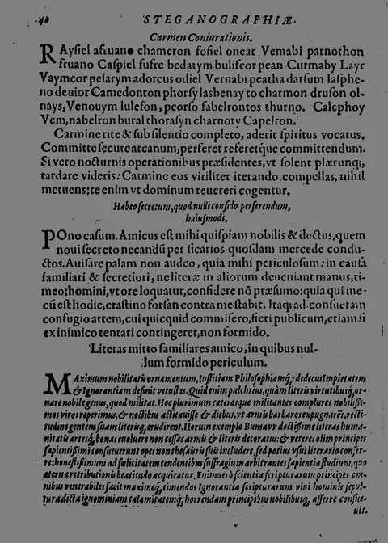
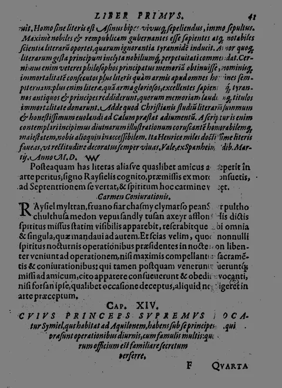
Steganographia — sub-spirits of the prince Raysiel and their cipher keys, Book I, ch. XIII · cipher-key table full_chunk_0024
A spirit-name table — each entry carries its red (rubric) and black letter and a numeric value, the key by which the hidden message is read out of the conjuration; OCR cells left [unclear] are damaged in the print. Read alongside the facsimile.
Diurnal dukes (the fifties and the thirties)
| S. | X. | S. | R. | S. | X. | S. | R. |
|---|---|---|---|---|---|---|---|
| Baciar 50 | Astael 50 | Chamael 30 | Melcha 30 | ||||
| Thoac 50 | Ramica 50 | Fursiel 30 | Tharas 30 | ||||
| Sequel 50 | Dubarus 50 | Betasiel 30 | Vuiel 30 | ||||
| Sadar 50 | Armenia 50 | ||||||
| Terath 50 | Albhadur 50 |
Nocturnal dukes (the forties, the twenties, and the solitary tens)
| Roth. S. | R. S. | R. S. | R. S. |
|---|---|---|---|
| Thariel 40 | Lazaba 40 | Lamas 10 | Thurcal 10 |
| Paras 40 | Aleasy 40 | ||
| Arayl 40 | Sebach 40 | Belsay 20 | Sarach 20 |
| Culmar 40 | Quibda 40 | Morael 20 | Arepach 20 |
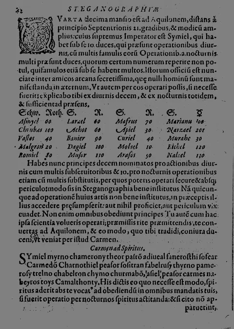
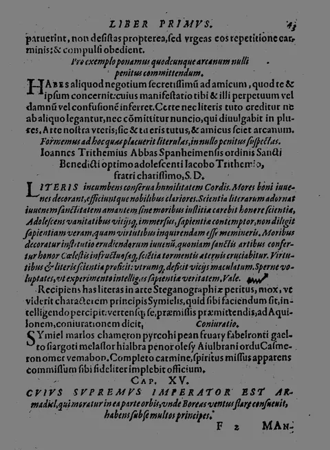
Steganographia — sub-spirits of the prince Symiel and their cipher keys, Book I, ch. XIV · cipher-key table full_chunk_0025
A spirit-name table — each entry carries its red (rubric) and black letter and a numeric value, the key by which the hidden message is read out of the conjuration; OCR cells left [unclear] are damaged in the print. Read alongside the facsimile.
| Schw. | Roth. | S. R. | S. S. |
|---|---|---|---|
| Asinyel 60 | Larael 60 | Mafrus 70 | Marianu 100 |
| Chubas 100 | Achot 60 | Apiel 30 | Narzael 20 |
| Vasles 40 | Banier 90 | Curiel 40 | Murahe 30 |
| Malgron 20 | Dagiel 100 | Molael 10 | Eichel 120 |
| Romiel 80 | Musor 110 | Arafos 50 | Nalael 130 |
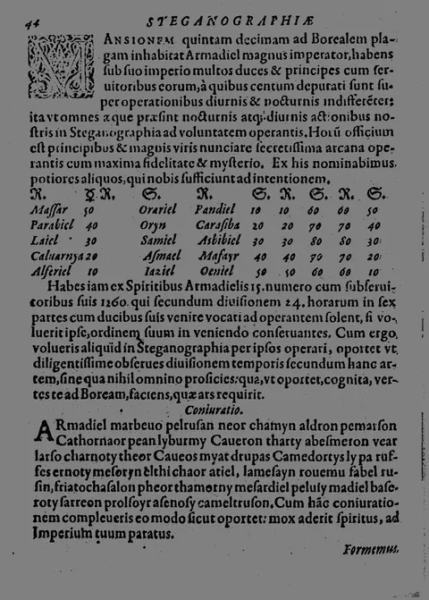
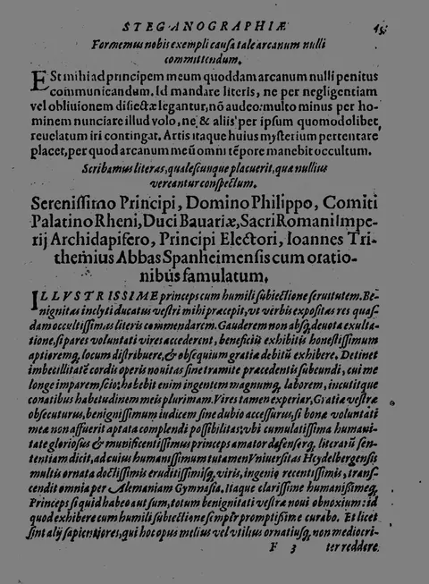
Steganographia — sub-spirits of the prince Armadiel and their cipher keys, Book I, ch. XV · cipher-key table full_chunk_0026
A spirit-name table — each entry carries its red (rubric) and black letter and a numeric value, the key by which the hidden message is read out of the conjuration; OCR cells left [unclear] are damaged in the print. Read alongside the facsimile.
| R. | Q. R. | S. R. | S. R. | S. |
|---|---|---|---|---|
| Massar 50 | Orariel 10 10 | Pandiel 60 60 50 | ||
| Parabiel 40 | Oryn 20 20 | Carasiba 70 70 40 | ||
| Laiel 30 | Samiel 30 30 | Astibiel 80 80 30 | ||
| Caluarnya 20 | Asmael 40 40 | Mafayr 70 70 20 | ||
| Alferiel 10 | Iaziel 50 50 | Oeniel 60 60 10 |
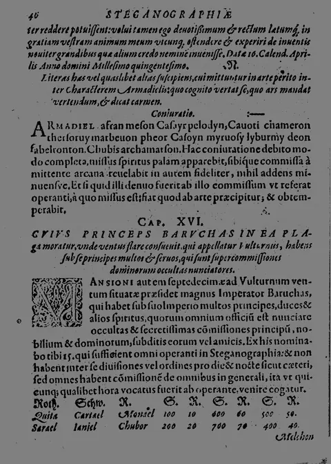
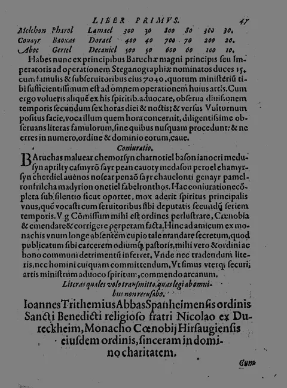
Steganographia — sub-spirits of the prince Baruchas and their cipher keys, Book I, ch. XVI · cipher-key table full_chunk_0027
A spirit-name table — each entry carries its red (rubric) and black letter and a numeric value, the key by which the hidden message is read out of the conjuration; OCR cells left [unclear] are damaged in the print. Read alongside the facsimile.
| Rot. | Schw. | X. | S. R. | S. R. | S. R. |
|---|---|---|---|---|---|
| Quita | Cartael | Monael | 100 10 | 600 60 | 500 50 |
| Sarael | Ianiel | Chubor | 200 20 | 700 70 | 400 40 |
| Melchon |
(The Baruchas table is broken off and the name- and value-columns are mis-aligned in the print; it continues in the following section. Cells left blank are damaged or omitted in the OCR.)
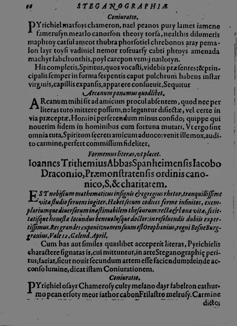
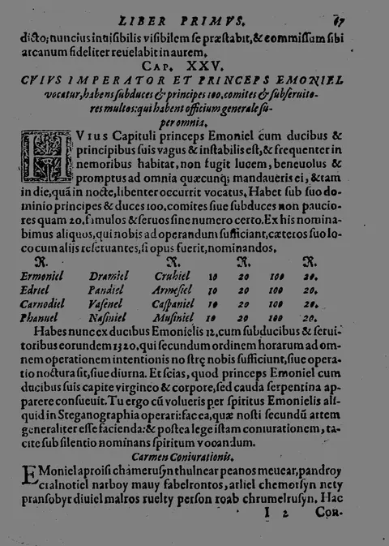
Steganographia — counts of the prince Pyrichiel and their cipher keys, Book I, ch. XXIV · cipher-key table full_chunk_0037
A spirit-name table — each entry carries its red (rubric) and black letter and a numeric value, the key by which the hidden message is read out of the conjuration; OCR cells left [unclear] are damaged in the print. Read alongside the facsimile.
| Spirit | Spirit | Numeric keys |
|---|---|---|
| Damarsiel | Menariel | 200 200 100 50 50 |
| Cardiel | Demediel | 100 600 60 50 50 |
| Almasor | Hursiel | [unclear] |
| Nemariel | Cuprisiel | 400 30 30 10 10 |
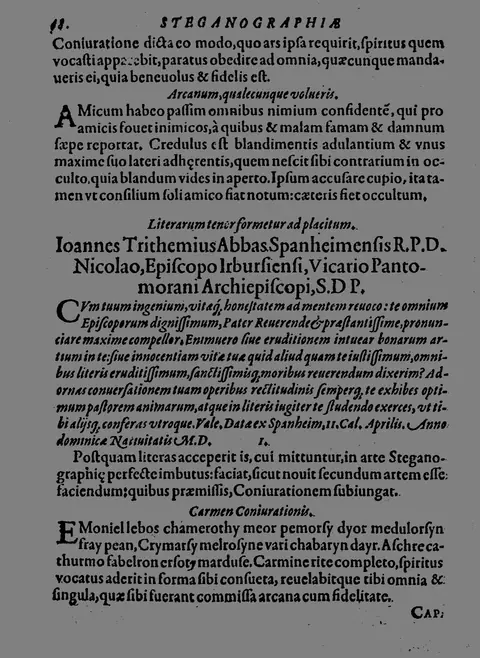
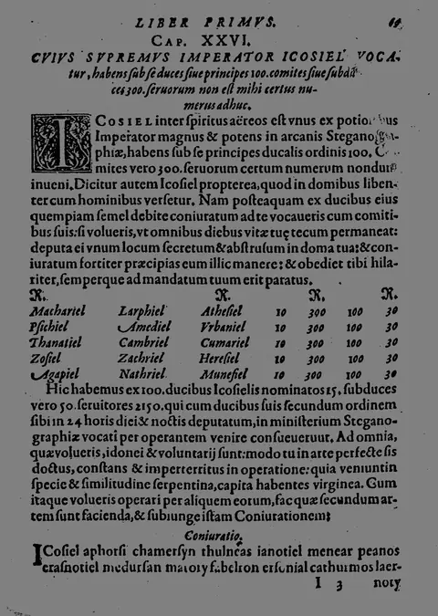
Steganographia — dukes and sub-dukes of the emperor Emoniel and their cipher keys, Book I, ch. XXV · cipher-key table full_chunk_0038
A spirit-name table — each entry carries its red (rubric) and black letter and a numeric value, the key by which the hidden message is read out of the conjuration; OCR cells left [unclear] are damaged in the print. Read alongside the facsimile.
| Spirit | Keys | Spirit | Keys |
|---|---|---|---|
| Ermoniel | 10 | Cruiiel | 100 |
| Edriel | 10 | Armeiel | 100 |
| Carnodiel | 10 | Caspaniel | 100 |
| Phanuel | 10 | Musiniel | 100 |
| Dramiel | 20 | 20 | |
| Pandiel | 20 | 20 | |
| Vasenel | 20 | 20 | |
| Nasiniel | 20 | 20 |
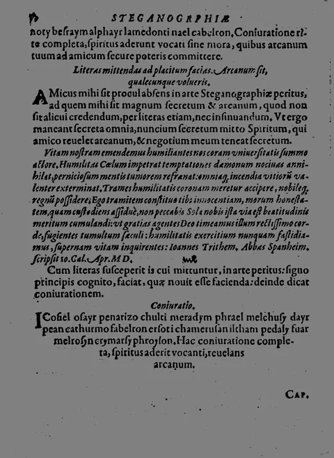
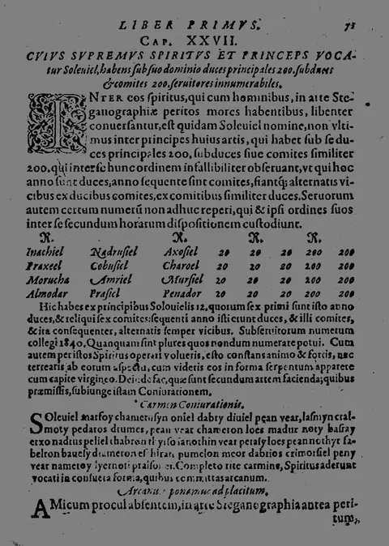
Steganographia — dukes of the emperor Icosiel and their cipher keys, Book I, ch. XXVI · cipher-key table full_chunk_0039
A spirit-name table — each entry carries its red (rubric) and black letter and a numeric value, the key by which the hidden message is read out of the conjuration; OCR cells left [unclear] are damaged in the print. Read alongside the facsimile.
| Spirit | Spirit | Spirit | Keys |
|---|---|---|---|
| Machariel | Larphiel | Athesiel | 10 |
| Psichiel | Amediel | Vrbaniel | 10 |
| Thanatiel | Cambriel | Cumariel | 10 |
| Zosiel | Zachriel | Heresiel | 10 |
| Agapiel | Nathriel | Munefiel | 10 |
| 300 / 100 / 30 |
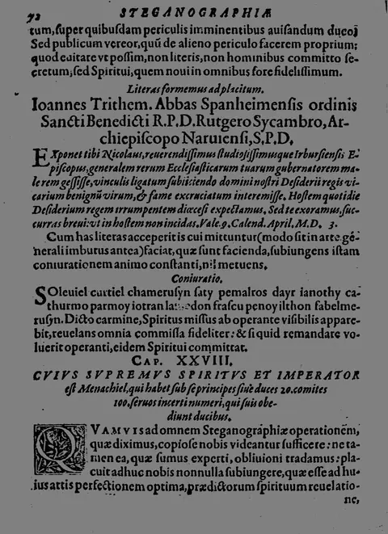
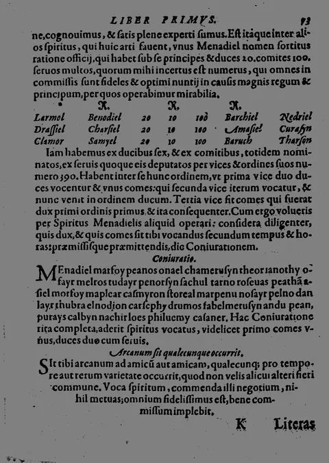
Steganographia — the twelve princes (dukes/counts) of Soleuiel and their cipher keys, Book I, ch. XXVII · cipher-key table full_chunk_0040
A spirit-name table — each entry carries its red (rubric) and black letter and a numeric value, the key by which the hidden message is read out of the conjuration; OCR cells left [unclear] are damaged in the print. Read alongside the facsimile.
| Spirit | Spirit | Spirit | Keys |
|---|---|---|---|
| Inachiel | Nadruiel | Axosiel | 20 / 200 |
| Praxeel | Cobusiel | Charoel | 20 / 200 |
| Morucha | Amriel | Alurfiel | 20 / 200 |
| Almodar | Prafiel | Penador | 20 / 200 |
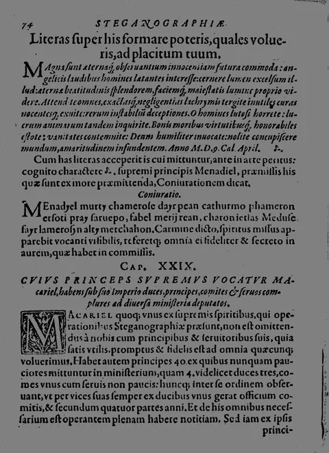
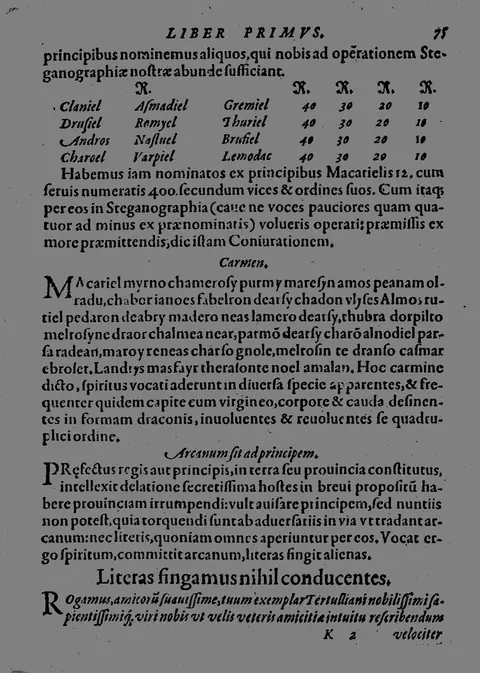
Steganographia — dukes and counts of the emperor Menadiel and their cipher keys, Book I, ch. XXVIII · cipher-key table full_chunk_0041
A spirit-name table — each entry carries its red (rubric) and black letter and a numeric value, the key by which the hidden message is read out of the conjuration; OCR cells left [unclear] are damaged in the print. Read alongside the facsimile.
| Spirit | Keys | Spirit | Keys | Spirit |
|---|---|---|---|---|
| Larmol | 20 | Benodiel | 10 / 100 | Barchiel, Nedriel |
| Drassiel | 20 | Charfiel | 10 / 100 | Amasiel, Curafyn |
| Clamor | 20 | Samyel | 10 / 100 | Baruch, Tharsen |
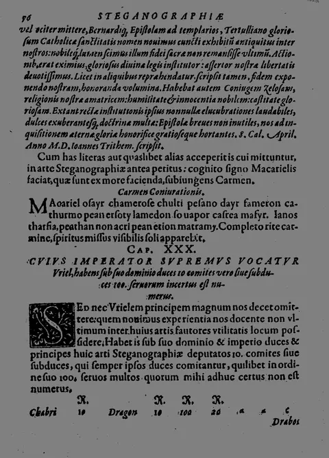
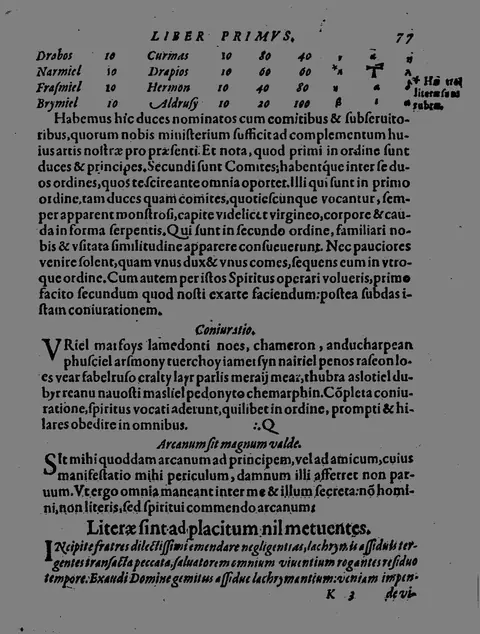
Steganographia — princes of Macariel and their cipher keys, Book I, ch. XXIX, with the opening of Vriel's table, ch. XXX · cipher-key table full_chunk_0042
A spirit-name table — each entry carries its red (rubric) and black letter and a numeric value, the key by which the hidden message is read out of the conjuration; OCR cells left [unclear] are damaged in the print. Read alongside the facsimile.
Princes of Macariel (ch. XXIX)
| Spirit | Spirit | Spirit | Keys |
|---|---|---|---|
| Claniel | Asmadiel | Gremiel | 40 |
| Drusiel | Romycel | Thuriel | 30 |
| Andros | Nasfuel | Brufiel | 20 |
| Charoel | Varpiel | Lemodac | 10 |
Opening of Vriel's dukes (ch. XXX), continued in full_chunk_0043
| Spirit | Keys |
|---|---|
| Chabri | 10 |
| Dragon | 10 |
| [counts/subdukes] | 100 20 10 |
| Drabos | [unclear] |
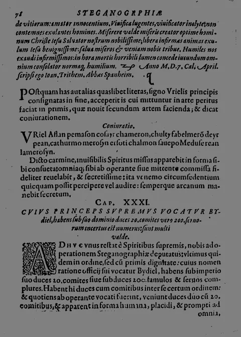
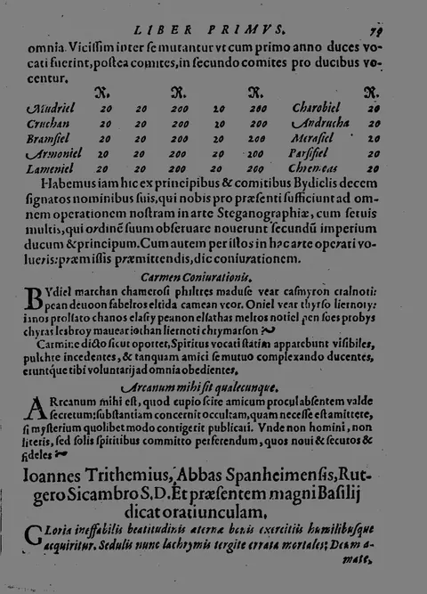
Steganographia — dukes of the emperor Vriel and their cipher keys, Book I, ch. XXX · cipher-key table full_chunk_0043
A spirit-name table — each entry carries its red (rubric) and black letter and a numeric value, the key by which the hidden message is read out of the conjuration; OCR cells left [unclear] are damaged in the print. The "columns / grid" cells reproduce the count-key tallies and grid-marks printed beside the dukes in the source. Continues from the Chabri / Dragon / Drabos fragment in full_chunk_0042. Read alongside the facsimile.
| Duke | Keys | Duke | Keys | Columns | Grid |
|---|---|---|---|---|---|
| Drobos | 10 | Curmas | 10 | 80 / 40 | 1 2 3 |
| Narmiel | 10 | Drapios | 10 | 60 / 60 | * 4 5 6 |
| Frasmiel | 10 | Hernon | 10 | 40 / 80 | 4 5 6 |
| Brymiel | 10 | Aldrusy | 10 | 20 / 100 | β 1 2 3 |
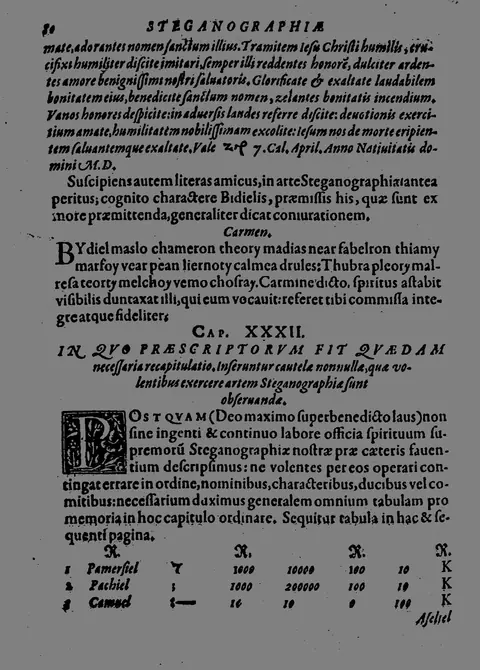
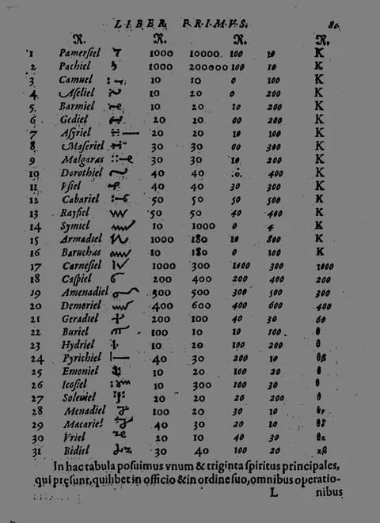
Steganographia — princes and counts of the prince Bydiel and their cipher keys, Book I, ch. XXXI · cipher-key table full_chunk_0044
A spirit-name table — each entry carries its red (rubric) and black letter and a numeric value, the key by which the hidden message is read out of the conjuration; OCR cells left [unclear] are damaged in the print. Read alongside the facsimile.
| Spirit | Keys | Spirit | Keys |
|---|---|---|---|
| Aindriel | 20 / 200 | Charobiel | 20 |
| Cruchan | 20 / 200 | Andrucha | 20 |
| Bramfiel | 20 / 200 | Merafiel | 20 |
| Armoniel | 20 / 200 | Parsifiel | 20 |
| Lameniel | 20 / 200 | Chrenicas | 20 |
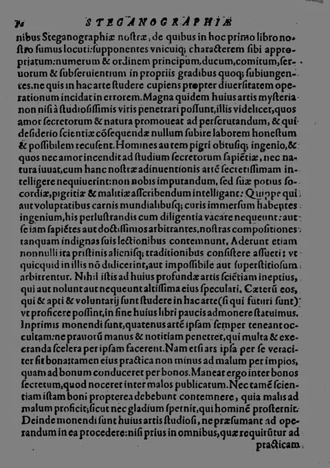
Steganographia — general recapitulation of the thirty-one supreme spirits of Book One, with their characters and numeric keys · cipher-key table full_chunk_0045
[A spirit-name table — each of the thirty-one principal spirits carries a character (a sigil, not reproducible as text and marked ⟨sigil⟩) and a row of numeric values, the key by which the hidden message is read out of the conjuration; numbers are transcribed from the facsimile, with [unclear] where the print is illegible. Read alongside the facsimile.]
| № | Spirit | Char. | R. | R. | R. | K. |
|---|---|---|---|---|---|---|
| 1 | Pamersiel | ⟨sigil⟩ | 1000 | 10000 | 100 | 10 |
| 2 | Pachiel | ⟨sigil⟩ | 1000 | 200000 | 100 | 10 |
| 3 | Camuel | ⟨sigil⟩ | 10 | 10 | 0 | 100 |
| 4 | Asiel | ⟨sigil⟩ | 10 | 20 | 0 | 200 |
| 5 | Barmiel | ⟨sigil⟩ | 10 | 20 | 10 | 200 |
| 6 | Gediel | ⟨sigil⟩ | 20 | 20 | 10 | 200 |
| 7 | Asyriel | ⟨sigil⟩ | 20 | 30 | 10 | 200 |
| 8 | Maseriel | ⟨sigil⟩ | 30 | 30 | 10 | 200 |
| 9 | Malgaras | ⟨sigil⟩ | 30 | 30 | 10 | 200 |
| 10 | Dorothiel | ⟨sigil⟩ | 40 | 40 | 10 | 200 |
| 11 | Vsiel | ⟨sigil⟩ | 40 | 40 | 30 | 200 |
| 12 | Cabariel | ⟨sigil⟩ | 50 | 50 | 40 | 200 |
| 13 | Raysiel | ⟨sigil⟩ | 50 | 50 | 40 | 200 |
| 14 | Symiel | ⟨sigil⟩ | 10 | 100 | 0 | 4 |
| 15 | Armadiel | ⟨sigil⟩ | 1000 | 180 | 10 | 60 |
| 16 | Baruchas | ⟨sigil⟩ | 1000 | 100 | 10 | 30 |
| 17 | Carnesiel | ⟨sigil⟩ | 1000 | 300 | 1000 | 100 |
| 18 | Caspiel | ⟨sigil⟩ | 200 | 400 | 200 | 200 |
| 19 | Amenadiel | ⟨sigil⟩ | 300 | 500 | 200 | 200 |
| 20 | Demoriel | ⟨sigil⟩ | 400 | 600 | 400 | 400 |
| 21 | Geradiel | ⟨sigil⟩ | 100 | [unclear] | 100 | 100 |
| 22 | Buriel | ⟨sigil⟩ | 100 | 10 | 10 | 20 |
| 23 | Hydriel | ⟨sigil⟩ | 100 | 10 | 100 | 200 |
| 24 | Pyrichiel | ⟨sigil⟩ | 100 | 10 | 0 | 200 |
| 25 | Emoniel | ⟨sigil⟩ | 100 | 10 | 20 | 200 |
| 26 | Icosiel | ⟨sigil⟩ | 100 | 10 | 300 | 100 |
| 27 | Soleuiel | ⟨sigil⟩ | 200 | 20 | 200 | 100 |
| 28 | Menadiel | ⟨sigil⟩ | 20 | 10 | 100 | 20 |
| 29 | Macariel | ⟨sigil⟩ | 40 | 40 | 20 | 10 |
| 30 | Vriel | ⟨sigil⟩ | 10 | 10 | 100 | 20 |
| 31 | Bidiel | ⟨sigil⟩ | 20 | 20 | 200 | 20 |
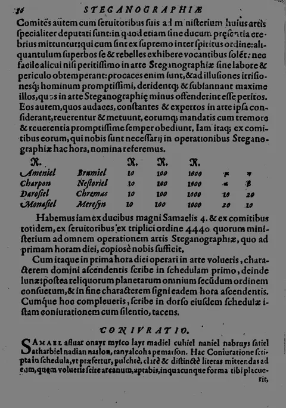
Steganographia — counts of the emperor Samael, prince of the first hour of the day, and their cipher keys, Book II, ch. I · cipher-key table full_chunk_0048
[A spirit-name table — each entry pairs two count-spirits and carries a row of numeric values together with the red (rubric) marker letters, the key by which the hidden message is read out of the conjuration; OCR cells left [unclear] are damaged in the print. Read alongside the facsimile.]
| R. | 10 | 100 | 1000 | |||
|---|---|---|---|---|---|---|
| Ameniel | Brumiel | 10 | 100 | 1000 | µ | 7 |
| Charpon | Nestoriel | 10 | 100 | 1000 | α | β |
| Darosiel | Chremas | 10 | 100 | 1000 | 10 | 20 |
| Monasiel | Merefyn | 10 | 100 | 1000 | 20 | 10 |
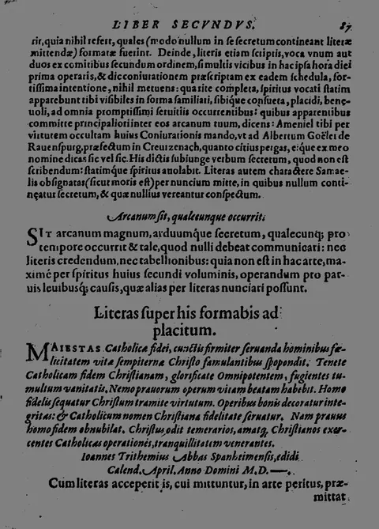
Steganographia — dukes and counts of the emperor Anael, prince of the second hour of the day (Cevorym), and their cipher keys, Book II, ch. II · cipher-key table full_chunk_0049
[A spirit-name table — each entry pairs a duke with two counts and carries a row of numeric values together with the red (rubric) marker, the key by which the hidden message is read out of the conjuration; "G. n." marks the servant-order count left general/unnumbered in the print. Read alongside the facsimile.]
| R. | |||||
|---|---|---|---|---|---|
| Menarchos | Orphiel | Quosiel | 10 | 100 | G. n. |
| Archiel | Cursiel | Ermaziel | 10 | 100 | G. n. |
| Chardiel | Elmoym | Granyel | 10 | 100 | G. n. |
Steganographia — dukes and counts of the emperor Vequaniel, prince of the third hour of the day (Danzur), and their cipher keys, Book II, ch. III · cipher-key table full_chunk_0051
[A spirit-name table — each entry pairs a duke with two counts and carries a row of numeric values together with the red (rubric) markers, the key by which the hidden message is read out of the conjuration; OCR cells left [unclear] are damaged in the print. Read alongside the facsimile.]
| R. | R. | R. | 20 | 20 | 200 | 200 |
|---|---|---|---|---|---|---|
| Asmiel | Drelmech | Gemarij | 20 | 20 | 200 | 200 |
| Persiel | Sadiniel | Xantiel | 20 | 20 | 200 | 200 |
| Atursiel | Parniel | Serviel | 20 | 20 | 200 | 200 |
| Zoesiel | Comadiel | Furiel | 20 | 20 | 200 | 200 |
Steganographia — dukes and counts of the emperor Vathmiel, prince of the fourth hour of the day (Elechym), and their cipher keys, Book II, ch. IV · cipher-key table full_chunk_0052
[A spirit-name table — each entry pairs a duke with two counts and carries a row of numeric values together with the red (rubric) markers, the key by which the hidden message is read out of the conjuration; OCR cells left [unclear] are damaged in the print. Read alongside the facsimile.]
| R. | R. | R. | R. | |||
|---|---|---|---|---|---|---|
| Aminyel | Emarfiel | Iermiel | 10 | 100 | 100 | 100 |
| Larmich | Permiel | Thuroz | 10 | 100 | 100 | 100 |
| Alarfel | Queriel | Vanesiel | 10 | 100 | 100 | 100 |
| Ormyel | Strubiel | Zasuiel | 10 | 100 | 100 | 100 |
| Zardiel | Diniel | Hermiel | 10 | 100 | 100 | 100 |
Steganographia — dukes and counts of the emperor Sasquiel, prince of the fifth hour of the day (Fealech), and their cipher keys, Book II, ch. V · cipher-key table full_chunk_0053
[A spirit-name table — each entry pairs a duke with two counts and carries a row of numeric values together with the red (rubric) markers, the key by which the hidden message is read out of the conjuration; OCR cells left [unclear] are damaged in the print. Read alongside the facsimile.]
| R. | R. | R. | 10 | 100 | 1000 |
|---|---|---|---|---|---|
| Daniel | Iamriel | Omerach | 10 | 100 | 1000 |
| Araniel | Funitiel | Lameros | 10 | 100 | 1000 |
| Maroch | Ramriel | Zachiel | 10 | 100 | 1000 |
| Sarapiel | Amisiel | Fustiel | 10 | 100 | 1000 |
| Putifiel | Vraniel | Camiel | 10 | 100 | 1000 |
Steganographia — dukes and counts of two day-hour princes, Samiel/Saniel (sixth hour) and Barquiel (seventh hour), and their cipher keys, Book II, chs. VI–VII · cipher-key table full_chunk_0054
[Spirit-name tables — each entry pairs a duke with two counts and carries a row of numeric values together with the red (rubric) markers, the key by which the hidden message is read out of the conjuration; cells left [unclear] are damaged in the print. The Barquiel table is broken across pages 107–108 in the source and is recovered here from the facsimile. Read alongside the facsimile.]
Saniel (Samiel), sixth hour of the day (Genapherym), ch. VI
| R. | R. | R. | 10 | 100 | 100 |
|---|---|---|---|---|---|
| Arnibiel | Gamyel | Nedabar | 10 | 100 | 100 |
| Charuch | Lenotriel | Permon | 10 | 100 | 110 |
| Medafiel | Sameon | Brasiel | 10 | 100 | 100 |
| Nathmiel | Trafiel | Camosiel | 10 | 100 | 100 |
| Pemiel | Xamyon | Euadar | 10 | 100 | 100 |
Barquiel, seventh hour of the day (Hamarym), ch. VII — (recovered from facsimile pages 107–108; the English chunk preserves only the first three duke-names and the leading numeric column)
| R. | 10 | 10 | 100 | ||
|---|---|---|---|---|---|
| Abrasel | Harmiel | Rafiel | 10 | 10 | 100 |
| Farmes | Nasthon | Veneliel | 10 | 10 | 100 |
| Nestorii | Varmey | Enarym | 10 | 10 | 100 |
| Manuel | Tulmas | Drusiel | 10 | 10 | 100 |
| Sagiel | Crosiel | Kathos | 10 | 10 | 100 |
Steganographia — sub-spirits of the emperor Abafdarhon, prince of the fifth hour of the night (Sanayfar), and their cipher keys, Book II, ch. XVII · cipher-key table full_chunk_0067
[A spirit-name table — each row gives three sub-spirits distributed through the twelve orders and turns of Abafdarhon, each carrying its numeric value (100), the key by which the hidden message is read out of the conjuration; OCR cells left [unclear] are damaged in the print. As shown in the chunk this is a partial transcription of the larger fifth-hour-of-night table. Read alongside the facsimile.]
| Meniel | Gemarii | Barmas | 100 100 100 100 |
| Charaby | Vanefcor | Platiel | 100 100 100 100 |
| Appiniel | Saméryn | Keszomy | 100 100 100 100 |
| Deinatz | Xantropy | Quesdor | 100 100 100 100 |
| Nechsrym | Herphatz | Caremaz | 100 100 100 100 |
| Hameriel | Chrymas | Ymariel | 100 100 100 100 |
| Valcaniel | Patrozyn | Kralym | 100 100 100 100 |
Steganographia — closing cipher-key markers for the sub-spirits of the prince Abaldarhon, Book II, ch. XVII (hour Aabidandes, angel Tartys) · cipher-key table full_chunk_0068
A spirit-name table — the three rubric marker-names close the roster of forty named sub-spirits, each carrying its numeric value, the key by which the hidden message is read out of the conjuration; OCR cells left [unclear] are damaged in the print. Read alongside the facsimile.
| Marker | Marker | Marker | Value |
|---|---|---|---|
| Sameln | Nameton | Habalon | 100 100 100 100 |
Steganographia — dukes, counts, and servants of the prince Iasguarim (emperor of the hour Malcho), Book II, ch. XXII · cipher-key table full_chunk_0073
A spirit-name table — each entry carries its red (rubric) and black letter and a numeric value, the key by which the hidden message is read out of the conjuration; OCR cells left [unclear] are damaged in the print. Read alongside the facsimile.
| Dukes | Counts | Servants |
|---|---|---|
| Lapheriel | Chameray | 30 30 30 / 10 10 10 |
| Emarziel | Hazaniel | 100 100 100 100 100 100 |
| Nameroyz | Vraniel | 300 300 300 |
Steganographia — dukes, counts, and servants of the prince Dardariel (eleventh hour of the night), Book II, ch. XXIII · cipher-key table full_chunk_0075
A spirit-name table — each entry carries its red (rubric) and black letter and a numeric value, the key by which the hidden message is read out of the conjuration; OCR cells left [unclear] are damaged in the print. Read alongside the facsimile.
| Dukes | Counts | Servants | ||
|---|---|---|---|---|
| Cardiel | Damar | Carman | Iatroziel | 10 / 20 / 00 |
| Permon | Alachuc | Elamyz | Lamersy | 10 / 20 / 00 |
| Armiel | Emeriel | Hamarytz | 10 / 20 / 00 | |
| Nastoriel | Naueroz | 10 / 20 | ||
| Casmiroz | Alaphar | 19 / 20 | ||
| Dameriel | Nermas | 10 / 20 | ||
| Furainiel | Druchas | 20 | ||
| Masriel | 20 | |||
| Hariaz | 20 |
Steganographia — dukes, counts, and servants of the prince Sarandiel (twelfth hour of the night, hour Xephan), Book II, ch. XXIV · cipher-key table full_chunk_0076
A spirit-name table — each entry carries its red (rubric) and black letter and a numeric value, the key by which the hidden message is read out of the conjuration; OCR cells left [unclear] are damaged in the print. Read alongside the facsimile.
| Dukes | Counts | Servants | ||
|---|---|---|---|---|
| Adoniel | Marachy | Hardiel | 10 / 20 / 00 / 20 / 10 | |
| Damisiel | Chabreon | Nefrias | 10 / 20 / 00 / 20 / 10 | |
| Ambriel | Nestoriel | Irmanotz | 10 / 20 / 00 / 20 / 10 | |
| Meriel | Zachriel | Gerthiel | 10 / 20 / 00 / 20 / 10 | |
| Denaryz | Naueriel | Dromiel | 10 / 20 / 00 / 20 / 10 | |
| Emarion | Damery | Ladrotz | 10 / 20 / 00 / 20 / 10 | |
| Kabriel | Namael | Melan | 10 / 20 / 00 / 20 / 10 |
Steganographia — the seven planetary Angels with their subject spirits and the mansion/value index (Menastor's table), Book III, Preface · cipher-key table full_chunk_0078
A planetary value-table — each planet-Angel governs three subject spirits, each spirit bearing a mansion number and a triplet of numeric keys (Roth.), by which secrets are announced through the art; OCR cells left [unclear] are damaged in the print. Read alongside the facsimile.
Mansions of the spirits with the planets (column heads in the print: ur. M. L. n. c.)
| Planet-Angel | Spirit | Mansion | Roth. | Roth. | Roth. |
|---|---|---|---|---|---|
| Oriffel — Sadsel | 1 | 675 | 663 | 651 | |
| Poniel | 2 | 700 | 688 | 676 | |
| Morisiel | 3 | 723 | 713 | 701 | |
| Zachariel | Floriel | 1 | 575 | 563 | 551 |
| Ariel | 2 | 600 | 588 | 576 | |
| Raphael | 3 | 625 | 613 | 601 | |
| Samael | Amael | 1 | 475 | 463 | 451 |
| Asmael | 2 | 500 | 488 | 476 | |
| Nebiel | 3 | 525 | 513 | 501 | |
| Michael | Laniel | 1 | 373 | 363 | 351 |
| Pasaef | 2 | 400 | 388 | 376 | |
| Vanriel | 3 | 425 | 413 | 401 | |
| Anael | Zabdiel | 1 | 275 | 263 | 251 |
| Sacmiel | 2 | 300 | 288 | 276 | |
| Adaniel | 3 | 325 | 313 | 301 | |
| Raphael | Carmiel | 1 | 175 | 163 | 151 |
| Nabeyel | 2 | 200 | 188 | 176 | |
| Pathiel | 3 | 225 | 213 | 203 | |
| Gabriel | Remafiel | 1 | 75 | 63 | 51 |
| Tespiel | 2 | 100 | 88 | 76 | |
| Theoriel | 3 | 125 | 113 | 101 |
Additional rows (partly damaged in the print)
| Mark | Name | Mansion | Name | Values |
|---|---|---|---|---|
| S. | Aniel | 4 | Wenasor | 631 / 20 / 642 / 639 |
| H. | Saturnus | Schamaro | 627 / 20 / 638 / 646 | |
| Li | Kraluotos | Ihubrays | 626 / 20 / 650 / 634 | |
| Ymarena | Tzatzraym | 628 / 20 / 639 / [unclear] |
Steganographia — value-tables for Orihel, supreme Angel of Saturn (first quarter), Book III, ch. I · cipher-key table full_chunk_0084
A planetary value-table — the rows give, under their rubric (R.) and black (S.) marker columns by hour, degree, and point, the numeric keys for finding the rising, elevation, and setting of the Angel Orihel with Saturn; OCR cells left [unclear] are damaged in the print. Read alongside the facsimile.
First table
| S. | R. | S. | R. | R. | S. |
|---|---|---|---|---|---|
| Hora 1 | Hor. 2 | hor. 3 | grad. | punct. | hor. 1 |
| 640 | 635 | 22 | 25 | 634 | 632 |
| 642 | R. 646 | 647 | R. 3 | 646 | 32 |
| 634 | 25 | 646 | 2 | 648 | 640 |
| 646 | 640 | 632 | 1 | 632 | 650 |
| 635 | 646 | 634 | 4 | 639 | 644 |
| 646 | 642 | 12 | 1 | 647 | 639 |
Second table
| R. | S. | R. | S. |
|---|---|---|---|
| hor. 2 | hor. 3 | [8] | |
| 632 | 632 | 650 | |
| 640 | 640 | 640 | |
| R. 24 | S. 633 | R. 646 | 650 |
| 647 | 632 | 639 | 626 |
| 638 | 632 | 640 | [unclear] |
| 639 | 640 | [unclear] |
Steganographia — value-tables for Sadael, second Angel of Saturn (second quarter, hours 4–6), Book III, ch. II · cipher-key table full_chunk_0085
A planetary value-table — the rows give, under their rubric (R.) and black (S.) marker columns by hour, the numeric keys for the point of Saturn's second motion and the place of the Angel Sadael; OCR cells left [unclear] are damaged in the print. Read alongside the facsimile.
First table
| R. | S. | R. | S. | R. | S. |
|---|---|---|---|---|---|
| horae 4 | horae 6 | horae 4 | horae 5 | horae 6 | horae 6 |
| 669 | 660 | 634 | 673 | 655 | 669 |
| 675 | 671 | 24 | 663 | 667 | 651 |
| 654 | 661 | 666 | 659 | 658 | 673 |
| 675 | 657 | 667 | 23 | 18 | 69 |
| 25 | 671 | 674 | 672 | 673 | 663 |
| 670 | 664 | 667 | 657 | 675 | 23 |
Second table
| R. | S. |
|---|---|
| hora 4 | hora 5 |
| 658 | 668 |
| 660 | 663 |
| 667 | 659 |
| 657 | 556 |
| 665 | 653 |
| 662 | 652 |